Общий вид, подход к станции, приближённая головоломка и возвращение в завод.
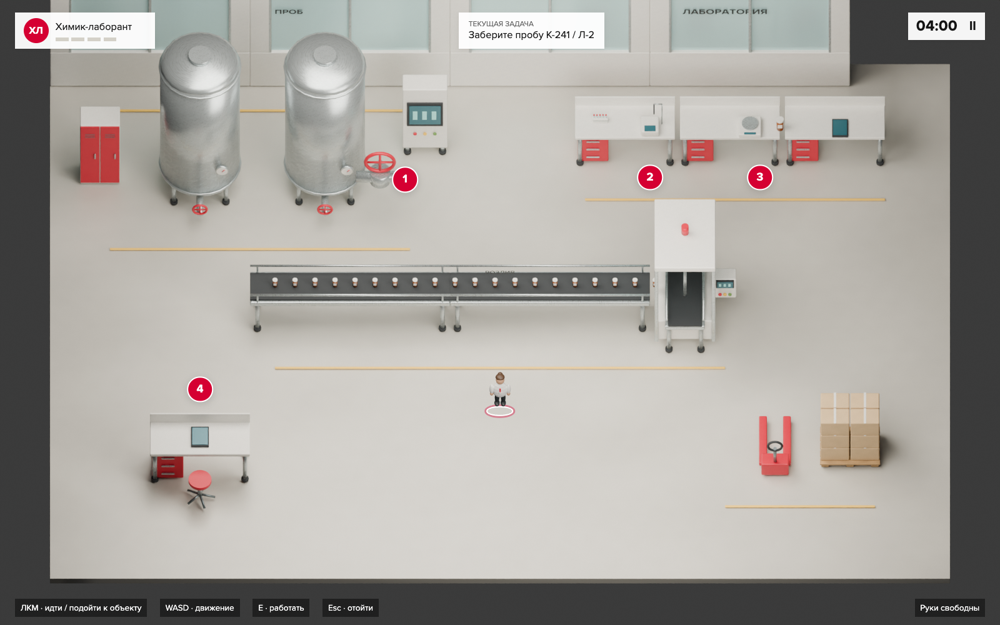
01 · Общий вид
Принять смену
Действие. Кликнуть по станции отбора проб. Персонаж обходит линию розлива.
Почему так. Завод занимает весь экран. В HUD только задача, таймер и четыре отметки.
Проверяем. Ориентирование в производственной цепочке.
02 · Маршрут
Подойти к оборудованию
Действие. Идти по проходу с помощью мыши, WASD или сенсорного джойстика.
Почему так. Клик по объекту означает «подойти», работа начинается только в зоне доступа.
Проверяем. Разделяем перемещение и взаимодействие.
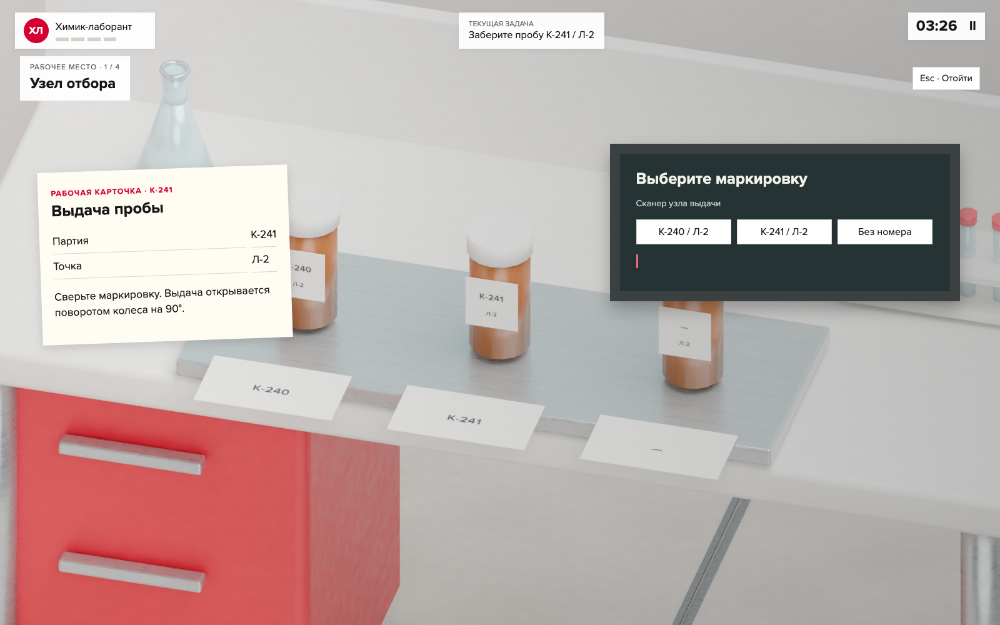
03 · Приближение
Сверить маркировку
Действие. На лотке выбрать К-241 / Л-2, затем открыть выдачу пробы.
Почему так. Камера приближается к реальным предметам. Крупная панель появляется только здесь.
Проверяем. Принадлежность результата конкретной пробе.
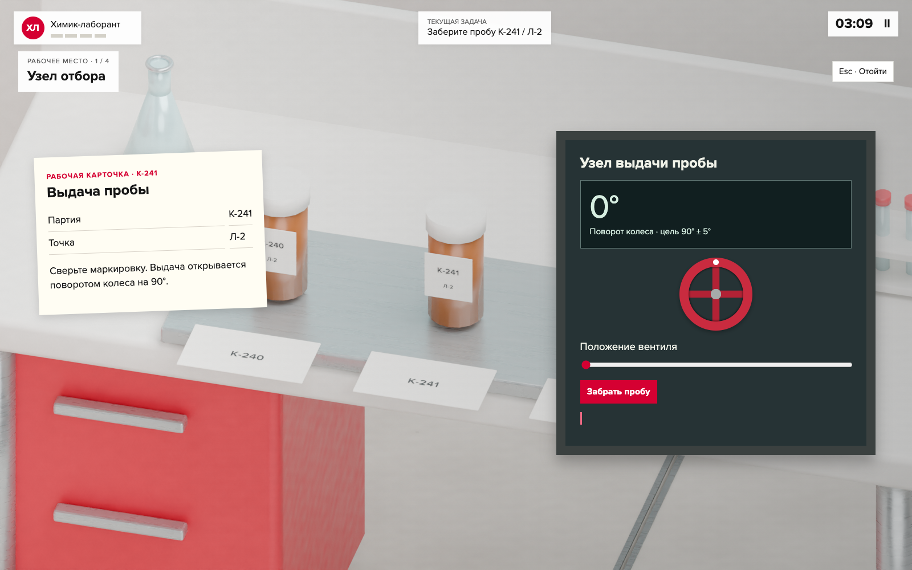
04 · Головоломка
Повернуть вентиль
Действие. Повернуть колесо на четверть оборота и забрать промаркированную пробу.
Почему так. Поворот мышью или пальцем; стрелки и ползунок дают точную альтернативу.
Проверяем. Следование рабочей карточке; это учебный макет узла выдачи.
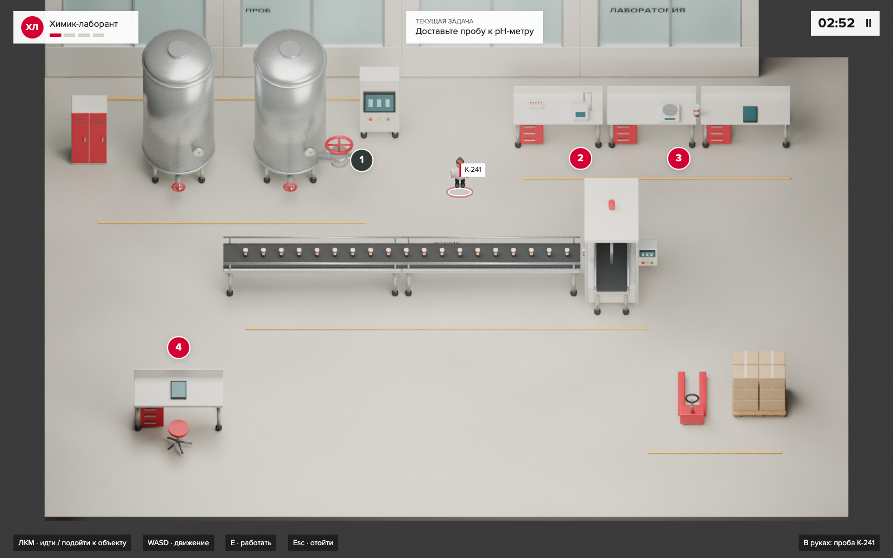
05 · Перенос
Отнести пробу в лабораторию
Действие. В руках одна проба. Выбрать станцию pH и пройти к ней.
Почему так. Состояние видно прямо у персонажа. Нет постоянно открытого инвентаря.
Проверяем. Связь отбора и измерения.
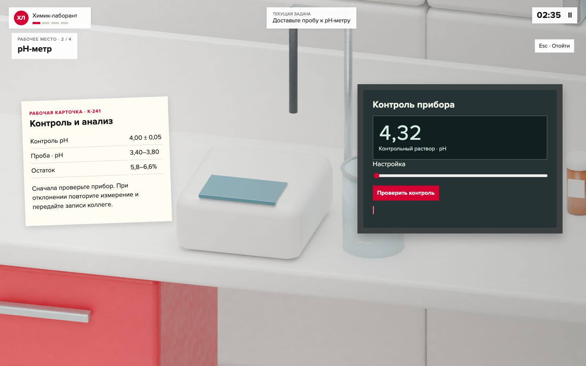
06 · Бортовой компьютер
Проверить pH-метр
Действие. Сравнить 4,32 с контрольными 4,00 ± 0,05 и настроить прибор.
Почему так. Экран оборудования становится игровой поверхностью: показание, регулятор и запуск.
Проверяем. Контроль измерений до работы с пробой.
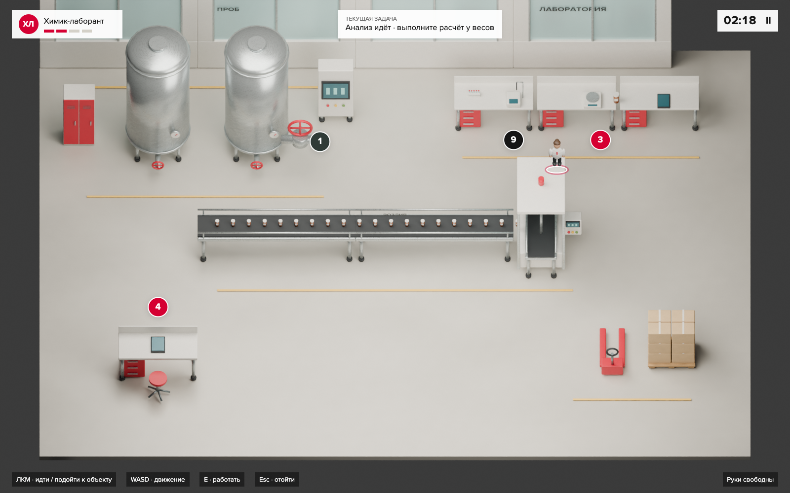
07 · Параллельная работа
Запустить анализ и отойти
Действие. Оставить пробу на станции. Пока идёт измерение, перейти к весам.
Почему так. Таймер прибора продолжает идти в общем виде. Есть повод планировать маршрут.
Проверяем. Различать время работы прибора и время игрока.
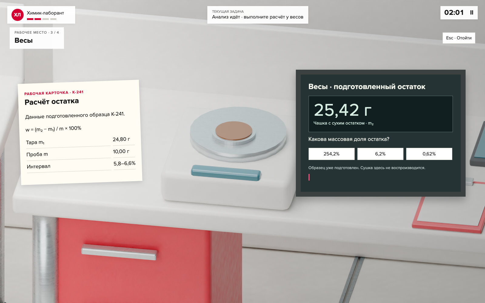
08 · Приближение
Рассчитать результат
Действие. Взвесить подготовленный остаток: вычесть тару и получить 6,2%.
Почему так. Данные находятся на дисплее весов и карточке рядом. Ошибка позволяет исправить расчёт.
Проверяем. Масса тары, массовая доля, проценты.
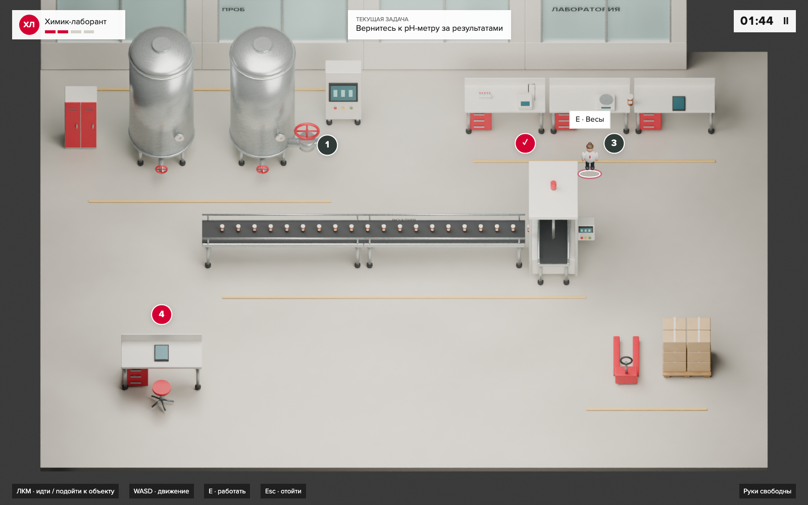
09 · Возвращение
Забрать показания
Действие. Вернуться к прибору: первый результат 3,10, повторный 3,12.
Почему так. Готовность станции видна издалека. Завершение анализа не подменяет вывод.
Проверяем. Воспроизводимость отклонения.
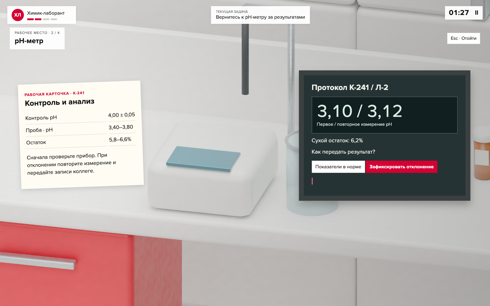
10 · Решение
Зафиксировать отклонение
Действие. Сопоставить результаты с учебной карточкой и выбрать передачу на проверку.
Почему так. На компьютере сохраняются оба измерения, расчёт и принятое решение.
Проверяем. Не выдавать единственный показатель за допуск партии.
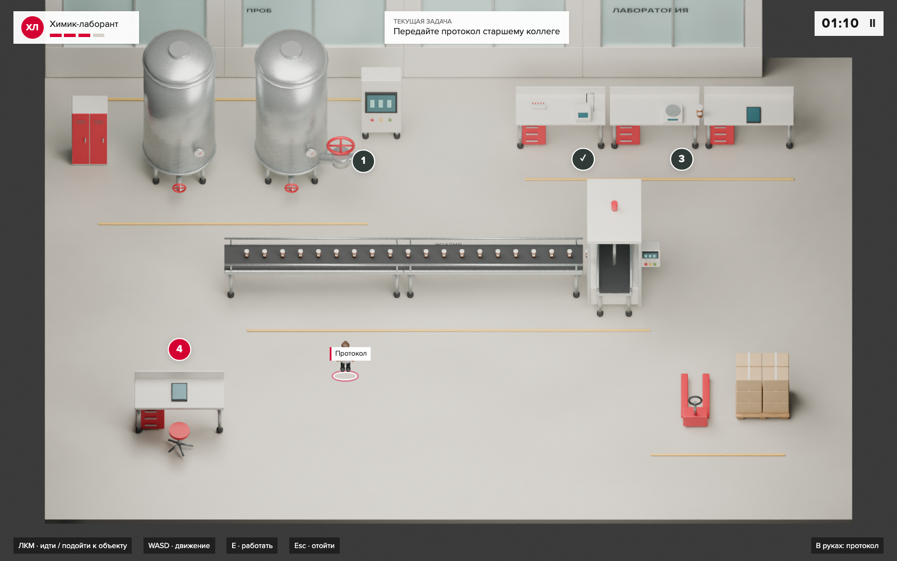
11 · Маршрут
Передать протокол
Действие. Нести протокол старшему коллеге через производственный проход.
Почему так. Возвращаемся в общий вид. Завод связывает задания в один рабочий день.
Проверяем. Командное взаимодействие и границы полномочий.
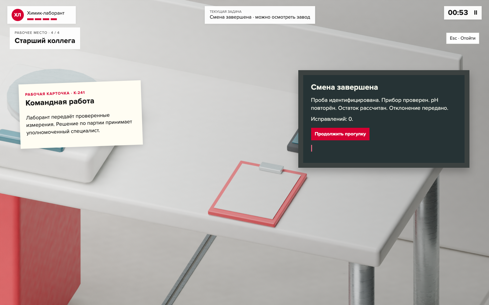
12 · Завершение
Увидеть выполненную работу
Действие. Передать результат и прочитать короткий разбор. Можно продолжить прогулку.
Почему так. Итог компактный, мир остаётся виден. В рабочем продукте здесь будет переход к анкете.
Проверяем. Самопроверка конкретных действий, без рейтинга пригодности.
Макет взаимодействий, не готовая Unity-игра. Учебные данные не являются нормативами компании.